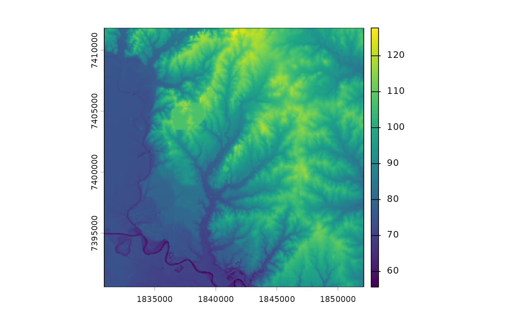

Download digital elevation model
download_dem.RdDownloads a 1/3 arc-second high resolution seamless USGS DEM raster. Standard DEMs represent the topographic surface of the earth and contain flattened water surfaces.
Usage
download_dem(x, srs = NULL, output = tempfile(fileext = ".tiff"))Arguments
- x
Either a SpatVector, SpatRaster, or SpatExtent. Or object that a SpatExtent can be retrieved from.
- srs
character in
<auth>:<code>format of the spatial reference system used inxif it is a SpatExtent object. Defaults NULL, can be left NULL if x is a SpatVector or SpatRaster.- output
A character file path specifying where the raster file should be stored. Defaults to a temporary file.
Examples
library(terra)
#> terra 1.8.80
location_of_interest <- system.file("extdata", "thompsoncreek.tif", package = "SELECTRdata")
location_of_interest <- terra::rast(location_of_interest)
extent <- ext(location_of_interest)
extent <- vect(extent, crs = crs(location_of_interest))
extent <- project(extent, "EPSG:6579")
auth <- crs(extent, describe = TRUE)
auth <- paste0(auth$authority, ":", auth$code)
extent <- ext(extent)
example_dem <- download_dem(x = extent, srs = auth)
plot(example_dem)
